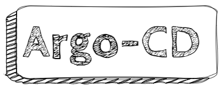
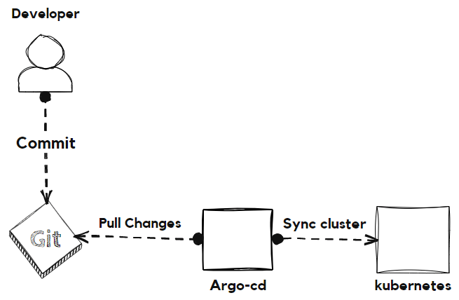

The Ultimate Guide to ArgoCD

Introduction to ArgoCD
What is ArgoCD and its Significance
ArgoCD is an open-source continuous delivery tool that simplifies and automates the deployment of applications on Kubernetes clusters. It provides a declarative and GitOps-centric approach, allowing users to manage and synchronize their application deployments across multiple environments easily. With ArgoCD, developers can focus on writing code without worrying about the complexities of deploying and managing their applications.
Advantages of Using ArgoCD for Managing Kubernetes Deployments
ArgoCD offers several advantages when it comes to managing Kubernetes deployments. Firstly, it provides a clear and intuitive user interface, allowing users to visualize and understand their application deployments easily. Secondly, it simplifies the process of deploying applications by automating the synchronization of desired state configurations with the actual state of the cluster. Additionally, ArgoCD integrates seamlessly with other tools and workflows, making it an ideal choice for organizations following continuous deployment practices. It also ensures the integrity and consistency of deployments by providing rollback mechanisms and allows for easy management of access control and role-based permissions.
Getting Started with ArgoCD
Prerequisites for Setting Up ArgoCD
Before installing ArgoCD, there are a few prerequisites that need to be fulfilled. These include having a Kubernetes cluster up and running, Docker installed, and access to a Git repository for storing application configurations. Additionally, it is recommended to have a basic understanding of Kubernetes concepts and familiarity with YAML files.
Installing ArgoCD on Kubernetes
To install ArgoCD on a Kubernetes cluster, the first step is to create a Kubernetes namespace to isolate its resources. Then, the ArgoCD controller and associated components can be easily deployed using a single YAML file. This ensures a clean installation and allows for easy management of ArgoCD resources.
Accessing the ArgoCD UI and CLI
After successfully installing ArgoCD, users can access the ArgoCD user interface (UI) through a web browser. The UI provides a comprehensive overview of all applications and their deployment statuses. Additionally, ArgoCD comes with a powerful command-line interface (CLI) that allows users to interact with ArgoCD resources and perform various management tasks from the command line.
ArgoCD Architecture

Overview of ArgoCD Components
ArgoCD is built upon a microservices architecture, comprising several components that work together to provide its functionality. These components include the ArgoCD API server, the ArgoCD application controller, and the ArgoCD repository server. Each component plays a crucial role in ensuring the successful synchronization and deployment of applications across Kubernetes clusters.
Understanding the ArgoCD Controller
The ArgoCD controller is the core component of ArgoCD responsible for managing the entire application lifecycle. It continuously monitors the desired state configurations defined in Git repositories and ensures their synchronization with the actual state of the cluster. The controller also handles application rollouts and rollbacks, making it a critical component for maintaining the desired state of deployments.
The Role of ArgoCD’s Application and Project Structures
ArgoCD organizes applications and their associated resources into projects, providing users with a logical grouping mechanism. Projects enable efficient management of applications based on similarities in configuration or ownership. Within each project, applications are defined using declarative YAML files, specifying the desired state of the application and its associated resources.
Managing Applications with ArgoCD
Defining Applications and Their Specifications
To manage applications with ArgoCD, users need to define the desired state of their applications using declarative YAML files. These files specify information such as the application’s name, source code repository, target namespace, container image specifications, and environment variables. Defining applications in this manner allows for version-controlled and reproducible deployments.
Configuring Git Repositories and Synchronization
ArgoCD relies on Git repositories to store and manage application configurations. Users can configure multiple Git repositories, each representing a different application or project. ArgoCD uses a GitOps approach to continuously monitor the specified Git repositories for changes and automatically sync the desired state configurations with the actual state of the Kubernetes cluster.
Working with ArgoCD Application Resources
ArgoCD supports various types of resources that can be defined as part of an application. These include deployments, services, config maps, and secrets. Deployments define the desired state of a specific workload, while services expose the deployed application to other parts of the cluster. Config maps and secrets allow for the management of application configuration and sensitive data securely.
Integrating ArgoCD with CI/CD Tools
ArgoCD seamlessly integrates with various CI/CD tools, making it easy to trigger deployment pipelines based on code changes. Whether you’re using Jenkins, GitLab CI/CD, or CircleCI, you can configure build triggers and GitOps automation to streamline your deployment workflow.
-
Configuring Build Triggers: Start by setting up build triggers in your CI/CD tool to detect changes in your application’s source code repository. Whenever changes are pushed to the repository, your CI/CD tool will initiate the deployment process.
-
Managing Application Deployments in Git: With ArgoCD, you define and manage your application deployments declaratively using Git repositories. This means that your application configurations, including the desired state, are version-controlled in Git. Your CI/CD tool only needs to push changes to the Git repository, and ArgoCD takes care of the rest.
-
Automated Packaging and Deployment: Once your CI/CD tool builds and packages your application, ArgoCD takes over to deploy it to the target Kubernetes clusters automatically. This automation ensures rapid and consistent deployments.
Performing Rolling Updates with ArgoCD
ArgoCD simplifies the process of rolling updates, allowing you to manage them efficiently:
-
Define Update Strategies: ArgoCD enables you to define update strategies that control the speed and reliability of the rollout process. You can choose to update applications gradually or rapidly, depending on your requirements.
-
Detect and Resolve Issues: Rolling updates in ArgoCD are designed to detect and resolve issues before they impact the entire cluster. This ensures a smooth and reliable update process.
ArgoCD Access Control and RBAC
Managing User Access and Permissions in ArgoCD is critical for maintaining security and integrity:
-
Access Control Mechanisms: ArgoCD provides built-in access control mechanisms that allow administrators to manage user access and permissions. You can create user accounts, assign roles, and define fine-grained permissions for different resources and operations.
-
Role-Based Access Control (RBAC): RBAC is a fundamental part of ArgoCD’s access control mechanism. It enables administrators to create roles and assign them to users or groups. These roles define the operations that users can perform on resources within different projects, providing a granular level of control.
-
Authentication and Authorization: ArgoCD supports various authentication and authorization mechanisms, ensuring that only authenticated and authorized users can interact with the system. You can choose from basic authentication, GitHub authentication, or external identity providers like LDAP or SAML, depending on your organization’s security requirements.
ArgoCD Best Practices
To make the most of ArgoCD, consider the following best practices:
-
Design Efficient Application Structure: Organize applications into projects based on ownership or functional similarities. Break down applications into smaller components and define dependencies between them for incremental updates and easier troubleshooting.
-
Manage Large-Scale Deployments: Utilize ArgoCD’s scalability features to manage large-scale deployments. Deploy applications across multiple clusters and explore support for federated clusters. Organize large-scale deployments effectively using Git repositories with subdirectories and submodules.
-
Implement Security Measures: Prioritize security by enforcing encryption in transit and at rest. Use secrets management solutions to protect sensitive data. Keep ArgoCD up to date to benefit from the latest security patches.
ArgoCD Troubleshooting and Monitoring
ArgoCD provides tools and practices for troubleshooting and monitoring:
-
Identifying and Resolving Common Issues: Use detailed logs provided by ArgoCD to identify and resolve common deployment issues. Understand log messages and error codes to troubleshoot effectively. Leverage the ArgoCD community’s documentation and forums for assistance.
-
Monitoring Performance and Health: Monitor essential performance indicators, such as resource usage, deployment status, and application health, using ArgoCD’s built-in metrics and Prometheus integration. Set up alerting mechanisms to proactively respond to performance degradation or failures.
-
Logging and Debugging: ArgoCD offers comprehensive logging capabilities. Track the entire lifecycle of deployments and gain insights into application behavior and synchronization. Use debugging tools like kubectl or argocd-diagnostics for diagnosing and resolving complex issues.
Recap of ArgoCD’s benefits and capabilities
ArgoCD simplifies Kubernetes deployments and provides a comprehensive solution for managing application deployments with ease. Its declarative and GitOps-centric approach, coupled with a user-friendly UI and powerful CLI, enables developers to automate their deployment workflows and reduce manual errors. ArgoCD’s scalability, security measures, and integration capabilities make it an invaluable tool for organizations embracing Kubernetes.
Key points to remember when deploying ArgoCD
-
Prerequisites: Before deploying ArgoCD, ensure that you have an operational Kubernetes cluster and access to a Git repository for storing application configurations. These prerequisites are essential for the successful setup of ArgoCD.
-
Access Control and RBAC: Properly configuring access control and Role-Based Access Control (RBAC) is crucial to maintaining the security and integrity of your ArgoCD deployments. Define roles, assign permissions, and manage user access to ensure authorized and controlled operations.
-
Integration and Monitoring: Leverage ArgoCD’s integrations with CI/CD tools and monitoring capabilities to maximize its potential. Integration with CI/CD tools streamlines your deployment workflow, while monitoring ensures the reliability and availability of your applications.
Final thoughts on why ArgoCD is a valuable tool in Kubernetes deployments
ArgoCD simplifies and streamlines Kubernetes deployments by providing a user-friendly interface, automation capabilities, and integration options. Its diverse range of features, including access control, RBAC, continuous deployment, and troubleshooting mechanisms, make it a valuable asset for both small-scale projects and large enterprise deployments. By adopting ArgoCD, organizations can enhance their productivity, minimize errors, and achieve efficient application deployment workflows.
Frequently Asked Questions (FAQs)
What is the difference between ArgoCD and FluxCD? ArgoCD and FluxCD are both popular continuous delivery tools for Kubernetes. While they share similar goals, there are some differences between them. ArgoCD focuses on providing a user-friendly interface, a powerful CLI, and advanced features like multi-cluster deployment and RBAC. FluxCD, on the other hand, is designed to be lightweight, with a strong focus on automated GitOps deployments. Ultimately, the choice between ArgoCD and FluxCD depends on the specific requirements and preferences of the organization.
Can I use ArgoCD with non-Kubernetes deployments? ArgoCD is primarily designed for Kubernetes deployments and relies on Kubernetes-specific resources and features. While it may not be directly compatible with non-Kubernetes deployments, it is possible to adapt and extend ArgoCD to manage other types of deployments. However, it is recommended to assess the suitability and limitations of ArgoCD for non-Kubernetes deployments and explore alternative tools if necessary.
How secure is ArgoCD for managing sensitive data? ArgoCD provides security measures to ensure the safe management of sensitive data. It supports encryption in transit and at rest to protect data confidentiality. Additionally, ArgoCD integrates with secrets management solutions, such as Kubernetes Secrets or external key management systems, to securely handle sensitive information. It is essential to follow best practices in configuring access controls, RBAC, and authentication mechanisms to further enhance the overall security of ArgoCD.
Does ArgoCD support multi-cluster management? Yes, ArgoCD supports multi-cluster management, allowing users to deploy and manage applications across multiple Kubernetes clusters. This capability is particularly useful for organizations operating hybrid cloud environments or managing distributed deployments. With ArgoCD’s multi-cluster support, users can define applications and their associated resources once and deploy them consistently across multiple clusters, simplifying the management and synchronization process.
How does ArgoCD handle rollbacks in case of failures? ArgoCD provides rollback mechanisms to handle failures during the deployment process. In the event of a failed deployment, ArgoCD can roll back to the previous known good state, ensuring the integrity and stability of the application. Rollbacks can be triggered automatically or manually, depending on the defined policies and user preferences. This allows developers to quickly recover from failures and maintain a reliable deployment workflow.
Can you customize the ArgoCD UI for branding purposes? Yes, the ArgoCD UI can be customized to align with an organization’s branding requirements. It allows users to customize the colors, logos, and themes of the UI, providing a consistent look and feel across the deployment process. With this customization capability, organizations can ensure that